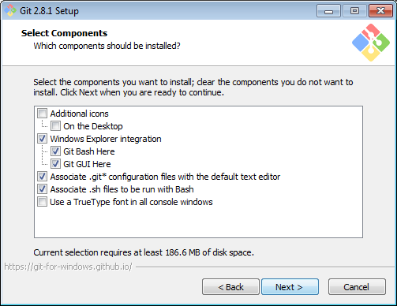
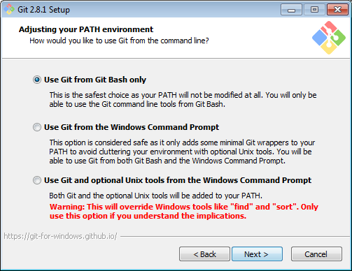
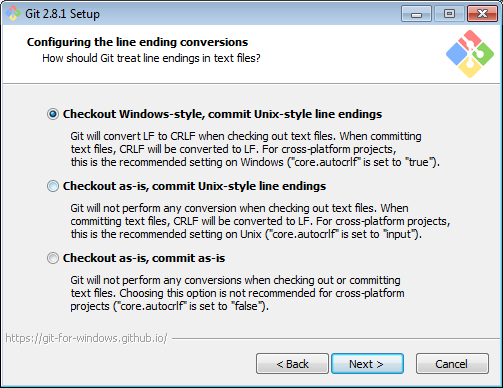
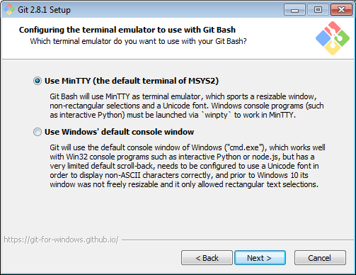
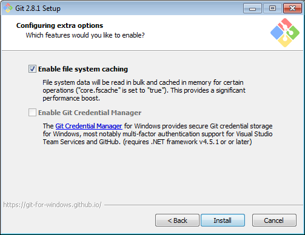

Intro to Command Line
Welcome!
Girl Develop It is here to provide affordable and accessible programs to learn software through mentorship and hands-on instruction.
Some "rules"
- We are here for you!
- Every question is important
- Help each other
- Have fun
Welcome!
Tell us about yourself.
- Who are you?
- What do you hope to get out of the class?
- Why do you live in this area?
Agenda
This class will be a combo of lecture + exercises
- Command line "lingo"
- Working with folder directories
- Working with files
- Standard input/output
- Working with commands
- Running and stopping processes
- Real world examples
The "lingo"
- "Terminal"
- "Command-line"
- "Command prompt"
- "Shell"
- "Console"
These are all pretty much the same thing.
What is a Terminal?
A text-based command interpreter.
The most common shell is "bash".
Operating Systems
Linux and Mac's OSX are based on a system called Unix
Both use the "Terminal" application to run Bash
Windows is based on a system called Windows NT
The Windows "Command Line" application uses a different set of commands
Installing Bash on Windows
We'll use a tool called Git Bash, part of the Git for Windows suite, to use bash on Windows
Download Git for Windows
Install Options
Selecting "Windows Explorer Integration" will make it easier to open files in Git Bash
Install Options
Select use "Git from Git Bash only" to avoid altering built-in Windows tools
Install Options
These options related to the Git package management system, which we won't use in this class. The default is fine.
Install Options
Select "Use MinTTY" for a prettier terminal
Install Options
Select "Enable file system caching" to speed up some actions
Fire it up!
Windows: open Git Bash
Mac: Open Terminal

Prompt

Prompt
Usually shows your username and computer name.
Indicates that the terminal is ready for a command.
Cursor

Cursor
Indicates your current spot in the terminal.
Shows you where the stuff you type will go.
Your First Command
- Type
pwdinto your terminal. - Press the enter key.
Your First Command
pwd

clear
The clear command clears the contents of the terminal and issues a prompt.
This is good for removing previous output that is unnecessary to the task at hand.
Feel free to use this whenever things get too cluttered.
Directories
Also referred to as "folders".
A container for files or other directories.
Nested files and directories can be referenced using paths.
Directory Trees
The set of all folders, taken together, makes up your entire file system.
This system is organized into a kind of upside down tree.
Directory Tress
At the very top of the tree is the root folder.

Paths
Each directory or file is separated by a forward slash "/"
There are two kinds of paths:
- Relative:
Desktop/the_project/overview.txt - Absolute:
/Users/jane/Desktop/logo.png
Shortcuts
- Current Directory:
. - Parent Directory:
.. - Home Directory:
~
cd
The cd command changes the current working directory.
It expects a file path as an "argument".
If no file path is given, it assumes your home directory by default.
cd

ls
The ls command lists the contents of a directory.
It expects a file path as an "argument".
If no file path is given, it assumes the current directory by default.
ls

Flags
The ls command accepts several option flags.
A flag is a special argument that is used to set an option for the command.
These are commonly a hyphen followed by a single character (e.g. -g)
Setting the -l flag on the ls command causes it to provide more verbose output.
ls -l

Sample Files
To make sure we can all see the same thing, we will work with the same set of sample files.
- Download the sample files
- Unzip the files in your home directory:
- Mac: /Users/[username]
- Linux: /home/[username]
- Windows: C:\Users\[username]
- You should have a new folder called "sample-files" in your home directory
cd & ls
Play with the cd and ls commands.
Be sure to incorporate:
- relative file path
- absolute file path
- the
.shortcut - the
..shortcut - the
~shortcut cdwithout an argument
Use pwd to check your location periodically.
Making a Directory
Use the mkdir command to create a new empty directory.
Pass the path of the directory name as the first argument.
If the base of the path doesn't already exist, the command will fail.
Use the -p flag to create the full path if non-existent.
mkdir

Removing Directories
Use the rmdir command to remove an empty directory.
Use rm -r to remove a non-empty directory.
rmdir

Let's Develop It!
cdto your home directory.cdto the sample-files directory.- Create the
girl/developdirectory path. - Navigate into the
girl/developdirectory. - Create the
itdirectory. - Navigate up two directories.
- Use the
pwdcommand to verify you are home. - Remove the
girl/develop/itpath.
Let's Develop It

Files
Use cat to output the contents of a file to the console.
Use more to step through the contents of a file one screen at a time. (Mac/Linux only)
Use less to step backwards or forwards.
Let's Develop It!
Explore the sample-files files using cat, more, and less
Can you find out what a terrapin is in the file turtles/about-turtles.txt?
Let's Develop It!

Hidden Files
Filenames that begin with a period are hidden from normal output.
e.g. ".bashrc"
Use the ls command with the -a flag to see hidden files in addition to the usual output.
Type ls -la into your terminal.
Use the -h flag to get human readable file sizes.
ls -la

Creating and Removing Files
Use touch to create a blank file or update the timestamp on an existing file.
Use rm to remove files.
Permissions
The unix security model breaks up file permissions into three groups:
- Owner
- Group
- Others
|
|
|
| owner | group | others |
Changing Permissions
Use chmod to change permissions on a file/directory
The argument has three sections:
u,g,oto signify which level to target.+or-to indicate whether adding or removing.r,w,xto indicate what type of permission to change.
Examples:
chmod u+w to add write permissions for the file's owner.
chmod go-rwx to remove all permissions for the file's group and everyone else.
Let's Develop It!
- Create a new file named
testfilein your home directory. - Grant yourself execute permission on the file.
- Remove read permission on
testfilefrom your group and everyone else. - Delete
testfile.
Let's Develop It!

Standard Output
Most commands display their results to a mechanism called the standard output.
By default, this directs its content to the display.
The standard output can be redirected to a file using the > operator.
ls > file_list.txt
Standard Output
In order to append to the file instead of overwriting it, use the >> operator instead.
ls >> file_list.txt
Both the > and >> operator will create the file if it doesn't exist.
Standard Input
Whenever commands accept keyboard input, it's likely they are really just drawing input from a mechanism called standard input.
By default, this is set to keyboard input.
The input to a command can be redirected to a file by using the < operator.
sort < file_list.txt
Both input and output can be redirected at the same time.
sort < file_list.txt > sorted_file_list.txt
Pipes
The "|" character can be used to allow commands to communicate during execution.
Pipes are placed between commands.
A pipe will cause the output of the left command to be used as the input of the right command.
ls -l | grep "myfile.txt" du | sort -nr
grep
The grep command outputs only the lines from a file that match a given pattern.
This is useful for doing text searches within a file.
The first argument is the pattern to match. The second, third, and so on are files to search within.
grep "ls" .bash_history
If no file argument is given, it will expect input from the keyboard.
Filters
Filters are commands whose behavior follows the following pattern:
- Accept input from standard input.
- Perform some operation on it.
- Send the results to standard output.
Filters
Check out the man pages for the following:
sort
uniq
grep
head
tail
fmt
pr
tr
sed
awk
Let's Develop It!
Use the ls and grep commands to print out only the files in your home directory that contain the word "bash".
Let's Develop It!
ls -a | grep bash

Processes
Whenever a command is executed, a new process is created.
top
The top command provides an up-to-date feed of information on the most active processes across the machine.
Useful for finding processes that are hogging the CPU.
ps
The ps utility displays all of your processes that have controlling terminals.
ps

Key Sequences
Ctrl + Z: Suspend the current process
Ctrl + C: Terminate the current process
Suspending a Process

bg & fg
The bg and fg commands bring a suspended process back into a running state.
bg runs it in a background process.
fg runs it in the foreground of the current terminal.
By default they target the most recently suspended process.
The job number can be provided as an argument. (The number we saw when we suspended the process)
Let's Develop It!
- Run the
topcommand. - Suspend the process.
- Bring the process back into the foreground.
Let's Develop It!

kill
The kill command terminates or sends a signal to a process.
It takes the process id (PID) as an argument.
You can find the PID using top or ps.
Let's Develop It!
- Clear your terminal and run the
yescommand. - Use the
Ctrl+Zkey sequence to suspend the process. - Use the
bgcommand to send the process to the background. - Notice the output is still happening even though the process is running in the background.
- Open a new terminal window, locate the PID for the "yes" process and use it to kill the process.
Commands
Typing ! followed by the name of a command will repeat the last line that began with that command.
ls -la ~ | grep "Desktop"!ls
In both instances, you should get the same output because the second line is simply repeating the first.
Typing !! by itself will re-run the last line entered.
history
The terminal keeps an ongoing log of all the commands you've run.
The history command prints the contents of the history file.
history

history
You can run a previous command using the number in the history.
!12
Almost no one does this.
Keyboard Shortcuts
Ctrl + a moves the cursor to the beginning of the command.
Ctrl + e moves the cursor to the end of the command.
Use the tab key to auto complete file paths
Use the up arrow to cycle through the command history.
Let's Develop It!
- Use your
upanddownarrows to locate a past command with one or more arguments. - Move your cursor to the beginning of the line.
- Move your cursor to the end of the line.
- Change one of the arguments and run it.
- Run the
datecommand. - Re-run the command from step 4 using
!. - Time the execution of your original command by running
time !!.
Real World Examples
Here are some examples of using the command line to accomplish tasks relating to development.
Serve up a Directory
python -m simpleHTTPServer
Don't forget: you can Ctrl + C to exit.
Version Control
Initialize the current directory as a Git repository. git init .
Commit your file changes. git commit -m "Hello Git!"
Include all changes next time we commit. git add --all
View the commit history. git log
Check out Pro Git for a crash course on command-line git.
Watching a Log File
tail -f my_awesome.log
More Resources
For those wanting to go deeper down the rabbit hole, check out these resources.